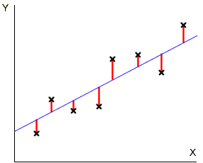
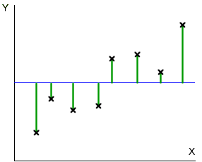
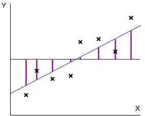

Sums of squares
An alternative description of the strength of a relationship is often used when the variables can be treated as a response measurement that may be affected by an explanatory variable. This description depends on three values called sums of squares.
Residual sums of squares
The residual sum of squares is the sum of squared vertical distances between scatterplot crosses and the least squares line,

This sum of squares describes response variation that is unexplained by the explanatory variable X and the method of least squares positions the line to make it as small as possible.
SSResid = Σ residual2
Total sums of squares
The overall variation of the response, ignoring the existance of the explanatory variable, can be summarised by the sum of squared differences between the values and the overall mean response. These differences can be displayed on the scatterplot as vertical distances between the crosses and the mean response.

The total sum of squares is the sum of the squared green lines above.
SSTotal = Σ (y - overall mean)2
Explained sums of squares
The difference between these two sums of squares is called the explained sum of squares and describes the response variation that is explained by the explanatory variable,
SSExplained = SSTotal - SSResid
This sum of squares can be described graphically as the sum of squared distances between the least squares line and the overall mean, evaluated at each data point.

The explained sum of squares is the sum of the squared purple lines above.
SSExplained = Σ (LS prediction - overall mean)2
The relative sizes of the explained and residual sums of squares describe how much of the variability is explained by the model.
Simulation: Impurities in plastic
The next diagram shows simulated data that might describe the impurities recorded from batches of plastic produced at different temperatures (degrees Fahrenheit).
Click on the jittered dot plots on the right to display the different components as coloured vertical lines on the scatterplot.
Drag the slider to change the strength of the relationship between the impurities and temperature. Observe that:
The relative sizes of the sums of squares therefore hold information about the strength and significance of the relationship.